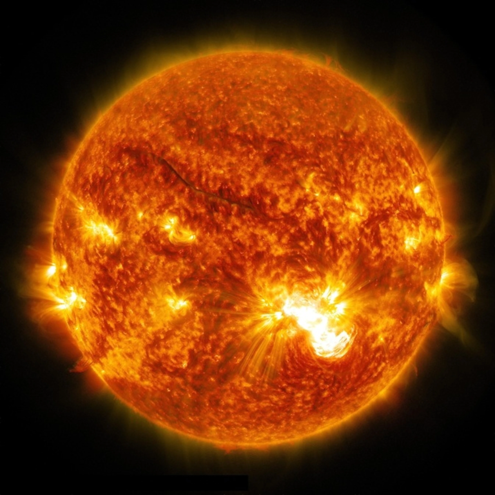
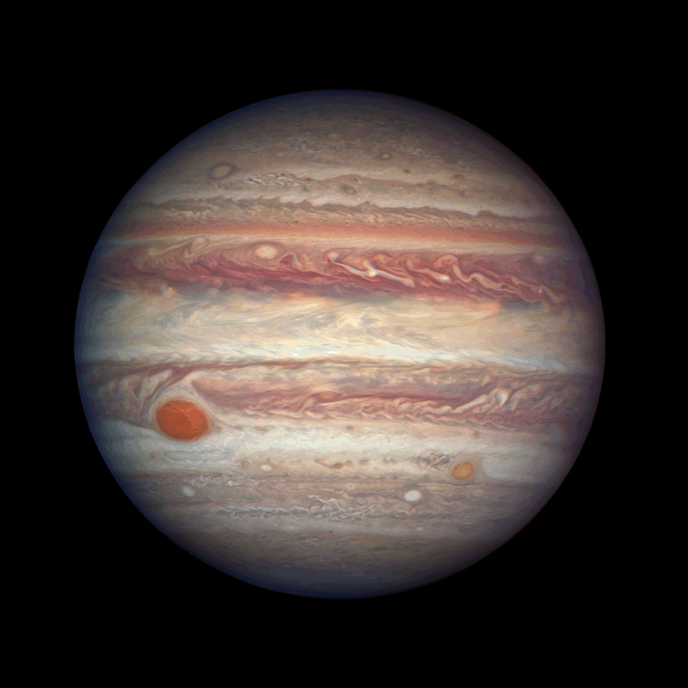

Solar System
Let's learn about the Solar System
What is the solar system?
The Solar System is a gravitationally bound system consisting of the Sun and the objects that orbit it.
The Sun
The Sun is the star at the center of the Solar System. It is a nearly perfect ball of hot plasma, heated to incandescence by nuclear fusion reactions in its core. The Sun radiates this energy mainly as light, ultraviolet, and infrared radiation, and is the most important source of energy for life on Earth.

Mercury
Mercury is the smallest planet in the Solar System and the closest to the Sun. Its orbit around the Sun takes 87.97 Earth days, the shortest of all the Sun's planets. Mercury is a rocky planet, also known as a terrestrial planet. Mercury has a solid, cratered surface, much like the Earth's moon.

Venus
Venus is the second planet from the Sun and is Earth's closest planetary neighbor. Venus has a thick, toxic atmosphere filled with carbon dioxide and it’s perpetually shrouded in thick, yellowish clouds of sulfuric acid that trap heat, causing a runaway greenhouse effect.

Earth
Earth is our home planet and is the third planet from the Sun. It is the only place we know of so far that’s inhabited by living things.

Mars
Mars is the fourth planet from the Sun. It is a dusty, cold, desert planet with a very thin atmosphere. Mars is also a dynamic planet with seasons, polar ice caps, canyons, extinct volcanoes, and evidence that it was even more active in the past.

Jupiter
Jupiter is the fifth planet from the Sun and is the largest planet in our solar system. Jupiter's familiar stripes and swirls are actually cold, windy clouds of ammonia and water, floating in an atmosphere of hydrogen and helium. Jupiter’s iconic Great Red Spot is a giant storm bigger than Earth that has raged for hundreds of years.

Saturn
Saturn is the sixth planet from the Sun and the second-largest planet in our solar system. It is adorned with thousands of beautiful ringlets made of chunks of ice and rock. Saturn is made mostly of hydrogen and helium.

Uranus
Uranus is the seventh planet from the Sun, and has the third-largest diameter in our solar system. Uranus was discovered in 1781 by astronomer William Herschel with the aid of a telescope. Uranus has an atmosphere made mostly of molecular hydrogen and atomic helium, with a small amount of methane. Most of its mass is a hot, dense fluid of "icy" materials (water, methane and ammonia) above a small rocky core.

Neptune
Neptune is the eighth and most distant major planet orbiting the Sun. It is dark, cold, and whipped by supersonic winds. It was the first planet discovered through mathematical calculations. Neptune's atmosphere is made up mostly of molecular hydrogen, atomic helium and methane. Most of its mass is a hot, dense fluid of "icy" materials (water, methane and ammonia) above a small rocky core.